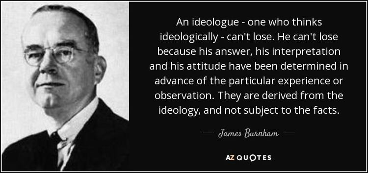

Anyway a new recruit to my Twitter feed DMed me saying "I’m very much looking forward to learning about the alt-centre. Your pinned tweet has captivated me". So my first very quick explanation of what my 'alt-centrism' was was this:
Yes, well the term “alt-centre" was a light-hearted kind of line, but, like many such things, having put it up there, I think it might be about something real.
An earlier iteration of my centrism is here.*
But that was then. Now I’d say, how about a fusion of Alasdair MacIntyre, James Burnham and George Orwell together with the idea that outputs from modern academia are mostly useless?
Anyway, this is a quick stake in the ground elaborating the central ideas of one of those folks' views — James Burnham. His most important book is The Machiavellians. Here he compares political speech and thinking as it's usually practised (which he calls politics as wish fulfilment) with a 'scientific' approach. (I think Burnham's use of the word ‘scientific’ ties his thesis to all kinds of extraneous agendas which confuse the issue and in what follows I strip down this claim to be something like "political thinking which seeks to proceed from experience and purge itself of wish fulfilment".)
These two approaches are then introduced via portraits of Dante's and Machiavelli's political thinking. In introducing his two early modern Italians at chapter length in the first part of the book, he mentions en passant the 1932 Democratic Party platform on which FDR ran in 1932. It includes as its most “solemnly promised” fundamental plank of the “covenant with the people”:
1) An immediate and drastic reduction of governmental expenditures by abolishing useless commissions and offices, consolidating departments and bureaus and eliminating extravagance, to accomplish a saving of not less than 25% in the cost of the Federal government …”
I doubt you need me to point out that FDR was famous for deficit spending to stimulate the economy. However, Burnham’s point is not that his platform was just a cynical lie. He thinks it was in good faith. But it helps place his claims about Dante’s political treatise De Monarchia as hopelessly infected by wish fulfilment in context.
Here’s the money quote at the end of his exposition of Dante's and Machiavelli's contrasting approaches:
The Typical Method of Political Thought
It is easy to dismiss [Dante's] De Monarchia as having a solely historical, archaic, or biographical interest. Few now would consider it seriously as a study of the nature and laws of politics, of political behavior and principles. We seldom, now, talk about “eternal salvation” in political treatises; there is no more Holy Roman Empire; scholastic metaphysics is a mystery for all but the neo-Thomists; it is not fashionable to settle arguments by appeal to religious miracles and allegorical parables from the Bible or the Fathers.
All this is so, and yet it would be a great error to suppose that Dante’s method, in De Monarchia, is outworn. His method is exactly that of the Democratic Platform with which we began our inquiry. It has been and continues to be the method of nine-tenths, yes, much more than nine-tenths, of all writing and speaking in the field of politics.
The myths, the ghosts, the idealistic abstractions, change name and form, but the method persistently remains. It is, then, important to be entirely clear about the general features of this method.
They may be summarized as follows:
There is a sharp divorce between what I have called the formal meaning, the formal aims and arguments, and the real meaning, the real aims and argument (if there is, as there is usually not, any real argument).
The formal aims and goals are for the most part or altogether either supernatural or metaphysical-transcendental—in both cases meaningless from the point of view of real actions in the real world of space and time and history; or, if they have some empirical meaning, are impossible to achieve under the actual conditions of social life. In all three cases, the dependence of the whole structure of reasoning upon such goals makes it impossible for the writer (or speaker) to give a true descriptive account of the way men actually behave. A systematic distortion of the truth takes place. And, obviously, it cannot be shown how the goals might be reached, since, being unreal, they cannot be reached.
From a purely logical point of view, the arguments offered for the formal aims and goals may be valid or fallacious; but, except by accident, they are necessarily irrelevant to real political problems, since they are designed to prove the ostensible points of the formal structure—points of religion or metaphysics, or the abstract desirability of some utopian ideal.
The formal meaning serves as an indirect expression of the real meaning—that is, of the concrete meaning of the political treatise taken in its real context, in its relation to the actualities of the social and historical situation in which it functions. But at the same time that it expresses, it also disguises the real meaning. We think we are debating universal peace, salvation, a unified world government, and the relations between Church and State, when what is really at issue is whether the Florentine Republic is to be run by its own citizens or submitted to the exploitation of a reactionary foreign monarch. We think, with the delegates at the Council of Nicea, that the discussion is concerned with the definition of God’s essence, when the real problem is whether the Mediterranean world is to be politically centralized under Rome, or divided. We believe we are disputing the merits of a balanced budget and a sound currency when the real conflict is deciding what group shall regulate the distribution of the currency. We imagine we are arguing over the moral and legal status of the principle of the freedom of the seas when the real question is who is to control the seas.
From this it follows that the real meaning, the real goal and aims, are left irresponsible. In Dante’s case the aims were also vicious and reactionary. This need not be the case, but, when this method is used, they are always irresponsible. Even if the real aims are such as to contribute to human welfare, no proof or evidence for this is offered. Proof and evidence, so far as they are present at all, remain at the formal level. The real aims are accepted, even if right, for the wrong reasons. The high-minded words of the formal meaning serve only to arouse passion and prejudice and sentimentality in favor of the disguised real aims.
This method, whose intellectual consequence is merely to confuse and hide, can teach us nothing of the truth, can in no way help us to solve the problems of our political life. In the hands of the powerful and their spokesmen, however, used by demagogues or hypocrites or simply the self-deluded, this method is well designed, and the best, to deceive us, and to lead us by easy routes to the sacrifice of our own interests and dignity in the service of the mighty.
The chief historical effects of the French Revolution were to break up the system of the older French monarchy, with its privileged financiers and courtiers, to remove a number of feudal restrictions on capitalist methods of production, and to put the French capitalists into a position of greater social power. It might well have been argued, prior to the Revolution, that these goals promised to contribute to the welfare of the French people and perhaps of mankind. Evidence for and against this expectation might have been assembled. However, this was not the procedure generally followed by the ideologists of the Revolution. They based their treatises not upon an examination of the facts, but upon supposedly fundamental and really quite mythical notions of a primitive “state of nature,” the “natural goodness of man,” the “social contract,” and similar nonsense. They sloganized, as the aims of the Revolution, Liberty, Equality and Fraternity, and the utopian kingdom of the Goddess Reason. Naturally, the workers and peasants were disappointed by the outcome, after so much blood; but, oddly enough, most of France seemed to feel not many years later that the aims of the Revolution were well enough realized in the military dictatorship of Bonaparte.
No doubt European unification under Hitler would have been evil for the European peoples and the world. But this is no more proved by complicated deductions to show the derivation of Nazi thought from Hegelian dialectic and the philosophic poetry of Nietzsche than is the contradictory by Hitler’s own mystical pseudo-biology. “Freedom from want” is very nearly as meaningless, in terms of real politics, as “eternal salvation”—men are wanting beings; they are freed from want only by death. Whatever the book or article or speech on political matters that we turn to—those of a journalist like Pierre van Paassen, a demagogue like Hitler, a professor like Max Lerner, a chairman of a sociology department like Pitirim Sorokin, a revolutionist like Lenin, a trapped idealist like Henry Wallace, a bull-dozing rhetorician like Churchill, a preacher out of a church like Norman Thomas or one in like Bishop Manning, the Pope or the ministers of the Mikado—in the case of them all we find that, though there may be incidental passages which increase our fund of real information, the integrating method and the whole conception of politics is precisely that of Dante. Gods, whether of Progress or the Old Testament, ghosts of saintly, or revolutionary, ancestors, abstracted moral imperatives, ideals cut wholly off from mere earth and mankind, utopias beckoning from the marshes of their never-never-land—these, and not the facts of social life together with probable generalizations based on those facts, exercise the final controls over arguments and conclusions. Political analysis becomes, like other dreams, the expression of human wish or the admission of practical failure.
Burnham has been spoken of as one of the architects of neoconservatism and he's clearly important for the alt-right. I first heard his name decades ago from Orwell's negative review of him as obsessed with power. He was! But my interest was piqued by hearing alt-right theorist Curtis Yarvin discussing him.
In discussing Burnham with those to the left of centre, they've generally been hostile to the words I've quoted above. This is how it was put to me:
The "social fact" he wants us to accept is that all the do-goodery is a sham, and then he wants us to reinterpret the world in that light. The world of course looks like a fearful place, in need of a harsh master. You get Hobbes and not Rousseau. Fittingly, Burnham is in with the paleoconservatives.
It is true that Burnham rules out the extreme naïveté of say the 'noble savage' myth — that we're all really naturally terribly nice and it's only power and civilisation that corrupts and coopts us. It's also true that Burnham's conservatism makes it easier for him to see Machiavelli's method as a pair of x-ray glasses through which he sees how contaminated political thinking is. However I think this hugely under-sells Burnham's insight. As a matter of history, it seems to me that his insight owes much not just to the conservatism to which Burnham came, but to the unsentimental Marxist (Trotskyist) convictions Burnham had held since the depression until just three years before he finished The Machiavellians. The (paleo) conservative Schumpeter's book Capitalism, Socialism and Democracy is explicitly Marxist in much of its analysis and arrives at politically conservative conclusions quite like Burnham's. Add to this Burnham's tragic outlook on human destiny — which is captured well in the last paragraph The Machiavellians.
Though … change will never lead to the perfect society of our dreams, we may hope that it will permit human beings at least that minimum of moral dignity which alone can justify the strange accident of man’s existence.
In fact I think a sense of tragedy is important to a sane political outlook, though I'll take that up in a subsequent piece. I mention it here just to try to put Burnham in context. Beyond this tragic foundation — that there are limits to what politics can achieve — I can't see why Burnham's insights quoted here shouldn't be grist for your mill wherever you are on the political spectrum. To summarise what I take to be that insight:
- over nine-tenths of political speech — from the academy to the street — is saturated with wish fulfilment; and
- political language is infected by transcendental claims and counterclaims which work to motivate people but derail the discussion from direct engagement with working out what would be best to do.
It chimes with me particularly because, as I’ve gradually honed my technique of 'lateral' economics, I've come to put great store on poking around to find a productive way of noticing things that are being overlooked. If one is successful in one's search for new ways to understand something, one looks back to see how it came pre-packaged with framing assumptions that were poorly matched to the phenomena one was observing or for understanding one's scope for action. For example, in this piece I elaborated some policy implications of public goods which seem both very important and obvious, but which I'd not seen articulated before. In these notes I tried to extend their range into non-economic phenomena. I discussed some of these things with my friend Peyton Bowman in one of our weekly chats. https://youtu.be/ptaIyCSaOuQ * I still remember one self-identifying leftie damning my post describing myself as a conservative, liberal social democrat with some praise before arriving at this jumping-off point: “The big question that has to be asked about centrism is - can one be passionate about it?” I confess to being shamefully unaware that one’s political views ought to be good fodder for marketing and entertainment. If I write a Part II to this post, I think I'll start with this quote from one of Burnham's Machiavellians:
“Nothing but a serene and frank examination of the oligarchical dangers of a democracy will enable us to minimize these dangers, even though they can never be entirely avoided.” Robert Michels, 1911
I don't see much centrism here. I see cynicism about utopianism, which is an essentially conservative view. Nicholas, you seem to spend so much time framing your arguments as criticisms of leftism that you forget to differentiate yourself from the right. Not that there's anything wrong with what you have written and cited, but the destination you have reached doesn't look much like the location you entered into Google Maps.
Thanks Paul,
I'm not preoccupied with reassuring people I'm in the centre. They'll have to work out where I am from what I say and do I guess. I think there may be some truth that I critique the left more than the right, but that doesn't really demonstrate much other than where my irritations lie and where I have a contribution to make. I certainly do do plenty of critiquing of the right, perhaps more on Twitter than here, but I wrote a major essay critiquing Hayek last year. I frequently critique the small government folks — for instance from the PC even though (ironically enough), I'm not a fan of expanding government so much as understanding the significance of "holding the centre" in all our institutions — as I intimated in this essay.
Nicholas, Thanks for sharing this piece and for the link to your 2005 post. A few comments about each:
Thanks for sharing all this. And I'll see you in the "alt-center!" Steve G.
I know some of your history, Nicholas, and it seems to me from a far distance that your philosophy is evolving due to your experience. Specifically, you show obvious frustration with not being able to fix problems due to intransigence by both sides of our bipolar politics. "Where you are" is a combination of what you have said and what you have not done - or to be more accurate, what you have been prevented in doing by the political system. I see you on Twitter reading the likes of Freddie de Boer and Andrew Sullivan, who are not of the centre at all. Their words can be seductive because they are designed to give the reader the thrill of rhetorical revenge for the perceived failures of liberalism. They are not any kind of "alt", as their history is full of supporting the right-wing establishment on pretty much everything, including wars. Please don't let their fables for disillusioned elites sour you on the future of liberal democracy. I consider myself an institutionalist but I come at it from a different vector than you do, evidently. To me, institutions by definition are founded on liberal values, and to the extent that they need reform they should return again and again to those values. In this way, reform is true to the meaning of the word, as it reconstitutes according to its original form. I think liberals are the real conservatives in the modern era as they hold all the institutions (even if only morally), and self-professed "conservatives" are all reactionaries as the things they seek to conserve have all disappeared. Quite where an alt-centre exists within that formulation, I don't know. So no, I won't be joining you. Good luck with it, though!
Thanks Steve, Great to see you in this neck of the woods! Reading a bio of Burnham left me intrigued by Niebuhr, about whom I know bugger all at this stage as he was one of the few on the left for whom Burnham had a high regard. I've also been reading William James today, and he's a marvel! I'll check out Cherniss, but I can't say I'm enamoured of neat little labels like that. (Though of course, like Groucho, in the case of 'alt', I'm making an exception).
The alt-centre is an attractive place if it abjures adversarialism. In the cooperative search for truth, hypotheses often fight to the death, but their advocates stay friends. When people start pinning their reputations on one shaky contention or another, they start lying to save face, and the whole enterprise drowns in lies. I suggest that that is happening in the adversarial system of government. Furthermore, I suggest that the only way such systems of government can avoid civil war is to make war on some other country.
Thanks R.N.E.
Adversarialism is everywhere in the Anglo-culture. Adam Smith advised his rentier readership to play tradesmen off against one another, a strategy that left the rentiers with more money for the serious business of snobbery.
This is a strange comment to make. If you look at the economic lineage of non-anglo advanced economies, the majority of them either were heavily influenced by the historical school (China, Taiwan, Japan, Korea, unsure about singapore), which emphasized interstate competition in the form of mercantilist tariffs, rely rare natural resources (Russia), or are the Nordic Countries/Central Europe. There's also southern Europe, but no one wants to be southern Europe, so they are culturally irrelevant in this context. It's telling that Friedrich List, who specifically viewed trade as a zero sum game, is easier to find in Japanese than in English, despite the fact that he lived in the United States. (One of the only mainstream English mentions of him I've been able to find before 2000 primarily complained about how difficult it was to find a copy of his work in English.) Meanwhile, Adam Smith views trade as a mutually beneficial relationship for all parties. His philosophy is the basis of economic traditions dominated by Anglo-Created Institutions. (Whether or not Anglo States actually promoted free trade in the 19th century is up for debate. The US and UK both had extremely high tariffs in the period, up to 45% at times.) Additionally, Asian states such as China and Singapore are notorious for having breakneck competition, see China's lying flat movement or how students prepare for the gaokao. Central Europe and the Nordic States are profoundly unusual. Seeing them as the norm is bizarre. There is a spectrum of competition, and "Anglo Culture" is not some outlier flung far away from the rest of the world.
Looks to me like Chris Dillow, who describes himself as a Marxist is a member of the alt-centre buying into radical diagnoses of what's wrong and how wrong, but not into pat solutions. viz
Mitt Romney, one of the few remaining Republicans who is not insane or pretending to be (perhaps Mormonism works a little like homeopathy here!) has just joined the Alt-centre.
Nice alt-centre idea.
Simone Weil
I'm intrigued to find another ally — I'd never heard of this guy but, in Burnham's terms he's a new Machiavellian, though, at least from what I've read he seems centrist in his politics, not overly given to conservative (even Burkean conservative) framing.
Bailey, F. G. (Frederick George), 1988. Stratagems and spoils: a social anthropology of politics.
Of relevance — from Simon, H. A., 1989. "Making Management Decisions: the Role of Intuition and Emotion", in Agor, W. H. (ed), Intuition in Organisations: Leading and Managing Productively, Sage Publications, Newbury Park, California, pp. 23-39.
Note to self From an article on Iris Murdoch "One thread that runs through all of Iris Murdoch’s aesthetic and ethical judgments has to do with the contrast between fantasy and imagination, which is connected with her struggle to create “free” characters. She does not reject all fantastic elements, but, as she told Harold Hobson:
Fantasy, however, is dangerous:
A recent substack post on Burke — arguing something similar. Focus on the real problems/issues in front of you. Take it easy on the right and wrong.
Stanley Hoffman, March 27, 1969 letter in the New York Review of Books
A passage of relevance. Brian Magee talking about students in 1968
Magee, Bryan, "What use is Popper to a practical politician?" in Ian Jarvie, Sandra Pralong, 1999. Popper’s Open society after fifty years: the continuing relevance of Karl Popper, Routledge, p. 144 at p. 144-5.
Steve Jobs explaining why you can't just come up with a good idea and then get it implemented by competent people.